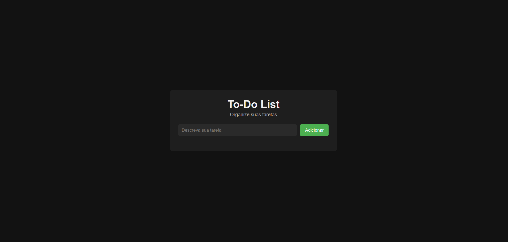
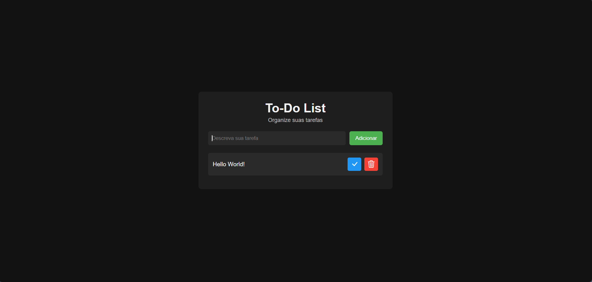
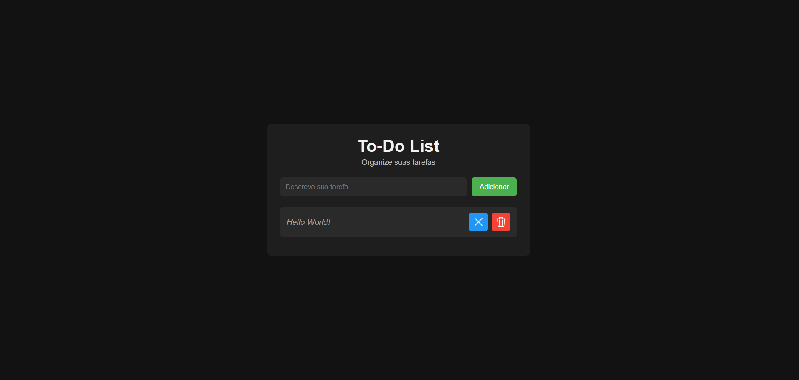

Para a criação deste projeto foi utilizado HTML, CSS e Javascript puro. Foi criada uma array para armazenar as tarefas. Depois de cada tarefa ser adicionada, ela é salva no armazenamento local do navegador. Funcionalidades incluem adicionar, marcar como concluída e deletar as tarefas.


